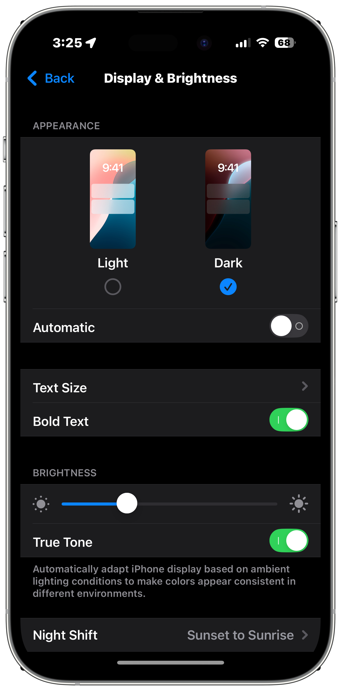
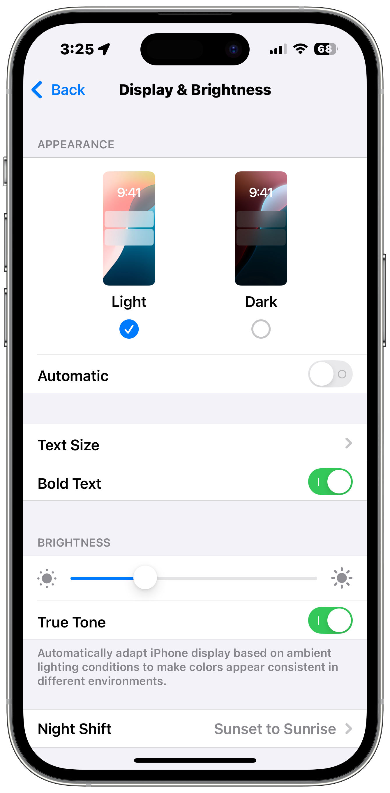
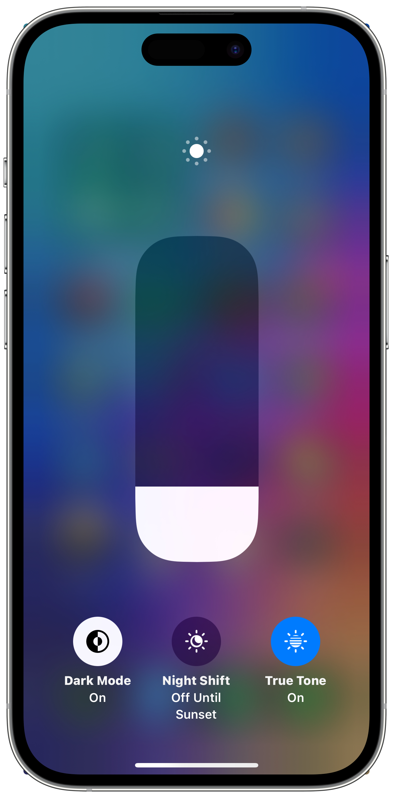
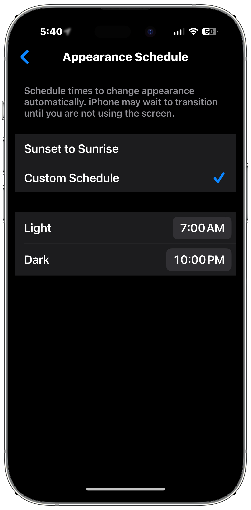
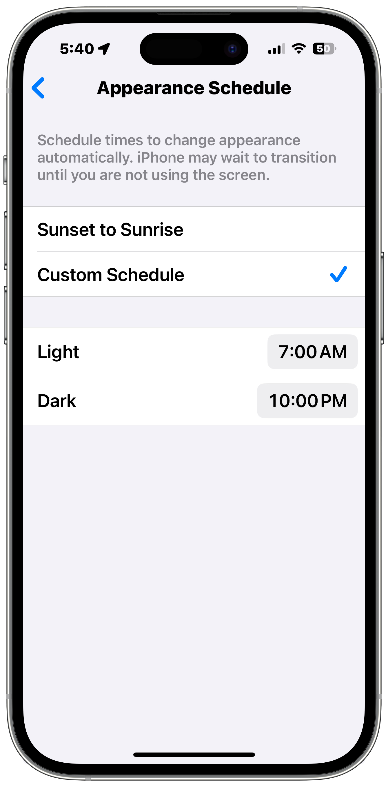

Dark Mode for iPhone, iPad, and iPod touch
Darken the theme of your display for easier viewing in low-light enviroments or for higher contrast on your iPhone, iPad, and iPod touch.
Turn on Dark Mode in Settings
- Open Settings
- Tap Display & Brightness
- Tap Dark on the right.


Toggle Dark Mode in Control Center
- Open Control Center
- Press and hold on the Brightness slider to expand it.
- Tap the Dark Mode icon to toggle it on and off.

You can also add a dedicated Dark Mode icon to Control Center.
Setup an Automation for Dark Mode
Learn how to setup Dark Mode to automatically enable at a specific time and disable at another specific time every day.
- Open Settings
- Tap Display & Brightness
- Enable Automatic below the Light and Dark Mode options
- Tap options
- Select Sunset to Sunrise to automatically enable whenever the sun is down or tap Custom Schedule to set exact times.
- If you select Custom Schedule, set the time you want Light Mode enabled, then set the time you want Dark Mode to enable.


Last updated: March 27, 2025
Reference the original support articles by Apple here:
Use Dark Mode on Your iPhone and iPad - Apple Support
All references to Apple Inc. and their products and services are trade-marked and are used in these articles for educational purposes.